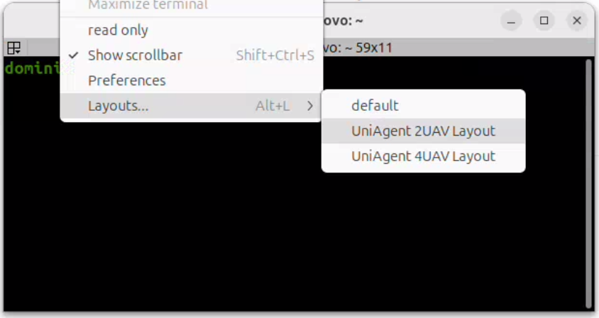
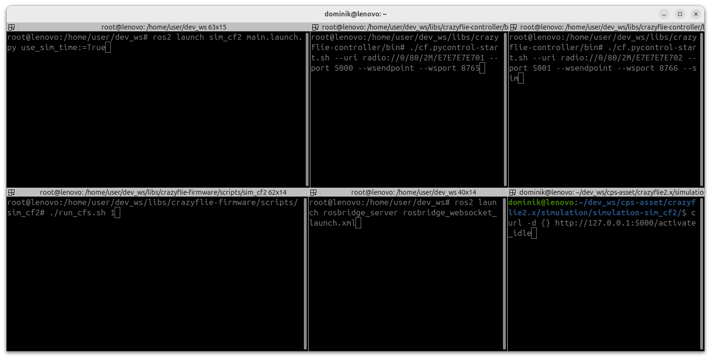
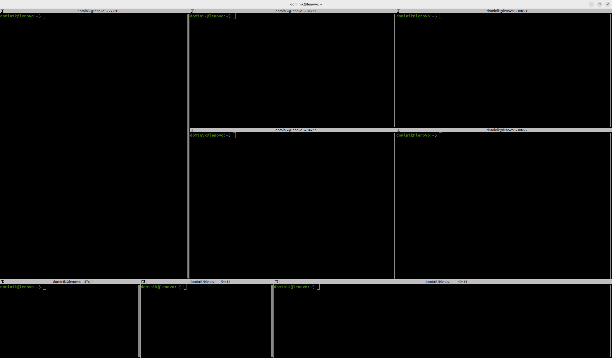

A more Convenient Terminal Layout
When working with multiple drones, it's often helpful to split your terminal into several windows; each dedicated to a specific purpose.
For example, you might use separate panes to monitor individual drone positions, observe the simulator's status, inspect messages sent through the ROS bridge, and send commands to the drones via the terminal.
This page explains how to configure a practical terminal layout using Terminator on Ubuntu 24.04.
Two layouts are provided: one optimized for working with two drones, and another designed for four-drone testing.
Once the initial configuration is finished, each layout can be easily launched by opening Terminator, right-clicking anywhere in the terminal, and selecting your desired layout from the Layouts menu:

Two-Drone Layout
The two-drone layout splits the terminal into multiple panes, including:
- A pane for Drone 1 telemetry
- A pane for Drone 2 telemetry
- A shared pane for Gazebo simulator output
- A pane to observe ROS bridge WebSocket traffic
- An optional pane for issuing high-level control commands

Four-Drone Layout
